MHWs vs. heat flux
Robert Schlegel
2020-02-25
Last updated: 2020-09-03
Checks: 7 0
Knit directory: MHWflux/
This reproducible R Markdown analysis was created with workflowr (version 1.6.2). The Checks tab describes the reproducibility checks that were applied when the results were created. The Past versions tab lists the development history.
Great! Since the R Markdown file has been committed to the Git repository, you know the exact version of the code that produced these results.
Great job! The global environment was empty. Objects defined in the global environment can affect the analysis in your R Markdown file in unknown ways. For reproduciblity it’s best to always run the code in an empty environment.
The command set.seed(20200117) was run prior to running the code in the R Markdown file. Setting a seed ensures that any results that rely on randomness, e.g. subsampling or permutations, are reproducible.
Great job! Recording the operating system, R version, and package versions is critical for reproducibility.
Nice! There were no cached chunks for this analysis, so you can be confident that you successfully produced the results during this run.
Great job! Using relative paths to the files within your workflowr project makes it easier to run your code on other machines.
Great! You are using Git for version control. Tracking code development and connecting the code version to the results is critical for reproducibility.
The results in this page were generated with repository version d1c9bad. See the Past versions tab to see a history of the changes made to the R Markdown and HTML files.
Note that you need to be careful to ensure that all relevant files for the analysis have been committed to Git prior to generating the results (you can use wflow_publish or wflow_git_commit). workflowr only checks the R Markdown file, but you know if there are other scripts or data files that it depends on. Below is the status of the Git repository when the results were generated:
Ignored files:
Ignored: .Rhistory
Ignored: .Rproj.user/
Ignored: data/ALL_anom.Rda
Ignored: data/ALL_other.Rda
Ignored: data/ALL_ts_anom.Rda
Ignored: data/ERA5_evp_anom.Rda
Ignored: data/ERA5_lhf_anom.Rda
Ignored: data/ERA5_lwr_anom.Rda
Ignored: data/ERA5_mslp_anom.Rda
Ignored: data/ERA5_pcp_anom.Rda
Ignored: data/ERA5_qnet_anom.Rda
Ignored: data/ERA5_shf_anom.Rda
Ignored: data/ERA5_swr_anom.Rda
Ignored: data/ERA5_t2m_anom.Rda
Ignored: data/ERA5_tcc_anom.Rda
Ignored: data/ERA5_u_anom.Rda
Ignored: data/ERA5_v_anom.Rda
Ignored: data/GLORYS_all_anom.Rda
Ignored: data/OISST_all_anom.Rda
Ignored: data/packet.Rda
Ignored: data/som.Rda
Ignored: data/synoptic_states.Rda
Ignored: data/synoptic_states_other.Rda
Unstaged changes:
Modified: analysis/_site.yml
Modified: analysis/node-summary.Rmd
Modified: code/workflow.R
Modified: output/NWA_product_regions.pdf
Modified: talk/WHOI_talk.Rmd
Note that any generated files, e.g. HTML, png, CSS, etc., are not included in this status report because it is ok for generated content to have uncommitted changes.
These are the previous versions of the repository in which changes were made to the R Markdown (analysis/mhw-flux.Rmd) and HTML (docs/mhw-flux.html) files. If you’ve configured a remote Git repository (see ?wflow_git_remote), click on the hyperlinks in the table below to view the files as they were in that past version.
| File | Version | Author | Date | Message |
|---|---|---|---|---|
| Rmd | d1c9bad | robwschlegel | 2020-09-03 | Re-built site. |
| Rmd | 3edeb98 | robwschlegel | 2020-09-02 | More minor analyses for discussion section. |
| Rmd | de9c829 | robwschlegel | 2020-09-01 | More work on follow up analyses |
| Rmd | 66f3736 | robwschlegel | 2020-08-26 | More edits to the figures |
| Rmd | f793044 | robwschlegel | 2020-08-24 | Created Table 1 and 2 |
| Rmd | 63c3ecd | robwschlegel | 2020-08-24 | Created new RMSE results figure and changed the figure numbers for the existing figs |
| Rmd | d61c819 | robwschlegel | 2020-08-20 | The full range of SOM figures |
| Rmd | 4b04d7a | robwschlegel | 2020-08-14 | Renamed some files in preparation for the file runs on the SOM sized data |
| Rmd | c0c599d | robwschlegel | 2020-08-12 | Combining the MHWNWA and MHWflux code bases |
| Rmd | 328f4a5 | robwschlegel | 2020-08-10 | Investigating the linearity of SSTa as a relationship to RMSE with Qx. |
| html | 9304ba0 | robwschlegel | 2020-07-21 | Build site. |
| Rmd | 49fd753 | robwschlegel | 2020-07-21 | Re-built site. |
| html | cf24288 | robwschlegel | 2020-07-17 | Build site. |
| Rmd | 6a591d5 | robwschlegel | 2020-07-17 | Re-built site. |
| html | ab06b94 | robwschlegel | 2020-07-14 | Build site. |
| Rmd | 8a8180f | robwschlegel | 2020-07-14 | Performed 12 hour nudge on Wx terns. Completed RMSE calculations, comparisons, and integration into shiny app. |
| Rmd | c5c1b35 | robwschlegel | 2020-07-14 | Working on RMSE code |
| Rmd | f4e6cf5 | robwschlegel | 2020-07-13 | Changed Qx units from seconds to days |
| Rmd | 43939db | robwschlegel | 2020-06-17 | Beginning to work on the figures for the publication. |
| Rmd | 40247a1 | robwschlegel | 2020-06-12 | Shifted the SST from GLORYS to NOAA |
| html | 7574e34 | robwschlegel | 2020-06-03 | Build site. |
| Rmd | 2a260ca | robwschlegel | 2020-06-03 | Updates to correlation work |
| html | 97d0296 | robwschlegel | 2020-06-02 | Build site. |
| Rmd | 111331d | robwschlegel | 2020-06-02 | Re-built site. |
| html | 0634d98 | robwschlegel | 2020-06-02 | Build site. |
| Rmd | ae74e76 | robwschlegel | 2020-06-02 | Re-built site. |
| html | c6087d9 | robwschlegel | 2020-06-02 | Build site. |
| Rmd | f3a6c78 | robwschlegel | 2020-06-02 | Small changes |
| Rmd | 56e6020 | robwschlegel | 2020-06-02 | Working on some choice event grouping by Q terms |
| Rmd | c839511 | robwschlegel | 2020-06-02 | Working back over some old thoughts |
| Rmd | cedc399 | robwschlegel | 2020-05-28 | Created some boxplots as well. |
| Rmd | 588922a | robwschlegel | 2020-05-28 | Another look at the correlations clustered by SOM node. |
| Rmd | 9e749bc | robwschlegel | 2020-05-28 | First pass at connecting the SOM results to the correlations |
| Rmd | 09ce925 | robwschlegel | 2020-05-20 | Some work on comparing the OISST and GLORYS MHWs. They are somewhat different… |
| html | 12b4f67 | robwschlegel | 2020-04-29 | Build site. |
| Rmd | e3591eb | robwschlegel | 2020-04-29 | Re-built site. |
| Rmd | d8d66e4 | robwschlegel | 2020-04-28 | Yo dawg, I heard you liked correlations on your correlations while running correlations for your correlations |
| Rmd | bc4ee87 | robwschlegel | 2020-04-28 | Added more functionality to app. Added cloud coverage, speds, and precip-evap. |
| Rmd | 29eb557 | robwschlegel | 2020-04-27 | Much progress on shiny app |
| Rmd | 7e78e53 | robwschlegel | 2020-04-27 | Changing shiny app over to a shinydashboard |
| Rmd | cdf16be | robwschlegel | 2020-04-23 | Now performing correlations with the correlation package |
| html | 7c04311 | robwschlegel | 2020-04-22 | Build site. |
| Rmd | 2af28b4 | robwschlegel | 2020-04-22 | Re-built site. |
| Rmd | a6a35c9 | robwschlegel | 2020-04-22 | Push before taking a different approach with the base results table |
| Rmd | 005e31a | robwschlegel | 2020-04-22 | Added evaporation data |
| html | 99eda29 | robwschlegel | 2020-04-16 | Build site. |
| Rmd | e4b9586 | robwschlegel | 2020-04-16 | Re-built site. |
| Rmd | cc258d7 | robwschlegel | 2020-04-15 | Some notes from a meeting discussing this project. |
| Rmd | f963741 | robwschlegel | 2020-04-15 | Some text edits and published the shiny app |
| Rmd | d22d6a7 | robwschlegel | 2020-04-14 | Text edits |
| Rmd | 7c19a6f | robwschlegel | 2020-02-28 | Notes from meeting with Ke. |
| Rmd | c31db05 | robwschlegel | 2020-02-27 | Working on K-means analysis |
| Rmd | d1b59f4 | Robert William Schlegel | 2020-02-27 | Created a decent exploratory app |
| Rmd | 9057363 | robwschlegel | 2020-02-27 | First round of results are in. Beginning to create a shiny app to explore them more. |
| Rmd | bc9588e | robwschlegel | 2020-02-27 | Working on parallel calculation |
| Rmd | b10501e | robwschlegel | 2020-02-27 | Working on correlation code |
| Rmd | 10c69f8 | robwschlegel | 2020-02-26 | A few smol things |
| html | 50eb5a5 | robwschlegel | 2020-02-26 | Build site. |
| Rmd | 891e53a | robwschlegel | 2020-02-26 | Published site for first time. |
| Rmd | 3c72606 | robwschlegel | 2020-02-26 | More writing |
| Rmd | bcd165b | robwschlegel | 2020-02-26 | Writing |
| Rmd | c4343c0 | robwschlegel | 2020-02-26 | Pushing quite a few changes |
| Rmd | 80324fe | robwschlegel | 2020-02-25 | Adding the foundational content to the site |
Introduction
This vignette will walk through the thinking and the process for how to link physical variables to their potential effect on driving or dissipating MHWs. The primary source that inspired this work was Chen et al. (2016). In this paper the authors were able to illustrate which parts of the heat budget were most likely driving the anomalous heat content in the surface of the ocean. What this analysis seeks to do is to build on this methodology by applying the fundamental concept to ALL of the MHWs detected in the NW Atlantic. Fundamentally we are running thousands of correlations between SST anomalies and the co-occurring anomalies for a range of physical variables. The stronger the correlation (both positive and negative) the more of an indication this is to us that these phenomena are related.
# All of the libraries and objects used in the project
# Note that this also loads the data we will be using in this vignette
source("code/functions.R")Relating SSTa to physical variables
We know when MHWs occurred, and our physical data are prepped, so what we need to do is run RMSE and correlations between SSTa from the start to peak and peak to end of each event for the full suite of variables. This will show us for each event which values related the best for the onset AND decline of the events. We will run RMSE and correlations on the full time series, too.
Running correlations is useful to see how well certain variables change in relation to SSTa, but these do not show how similar those proportions of change are. In order to do this we need to calculate the RMSE between the SST anomalies and the Qx terms. This may only be done with the Qx terms because they are in the same units as SST. One additional tweak we will need here is to add the cumulative Qx term for the following day to the SST anomaly from the first day of the MHW. This is done so that we may see more closely how the developing Qx term matches to the development of the SST anomaly. Effectively this tells us how much the Qx term may be driving SSTa.
# Extract just the event info
OISST_MHW_event_index <- OISST_MHW_event %>%
select(event_no, region, season) %>%
ungroup() %>%
mutate(row_index = 1:n())
# Run all the stats
ALL_cor <- plyr::ddply(OISST_MHW_event_index, .parallel = T,
.variables = c("row_index"), .fun = cor_all,
df_event = OISST_MHW_event) %>%
left_join(OISST_MHW_event_index, by = "row_index") %>%
select(region, season, event_no, ts, everything()) %>%
arrange(region, event_no) %>%
mutate(Parameter2 = factor(Parameter2))
# Save
saveRDS(ALL_cor, "data/ALL_cor.Rda")
saveRDS(ALL_cor, "shiny/ALL_cor.Rda")What we have now is a long dataframe containing the RMSE and correlations of different variables with SSTa. It must be pointed out that the correlations for the non-Qx terms are for the same day, there is no time lag introduced, which may be important. Below we are going to visualise the range of correlations for each variable to see how much each distribution is skewed. This skewness could probably be quantified in a meaningful way… but let’s look at the data first.
# source("shiny/app.R")
# Or it is live here:
# https://robert-schlegel.shinyapps.io/MHWflux/There are some really clear patterns coming through in the data. In particular SSS seems to be strongly related to the onset of MHWs. There are a lot of nuances in these data and so I think this is actually an example of where a Shiny app is useful to interrogate the data.
In the shiny app it also comes out that the longer events tend not to correlate strongly with a single variable. This is to be expected and supports the argument that very persistent MHWs are supported by a confluence of variables. How to parse that out is an interesting challenge.
Results
12 hour offset
While going through the data it was discovered that the OISST temperature values represent an average from midnight to midnight. This therefore puts them off set to the Qx terms, which were also being calculated over the same time period. But to compare the Qx terms to SST there should be a 12 hour offset. So 12 hours were added to the terms before re-running the pipeline and recalculating all of the correlations and RMSE. In the code chunk below we compare the stats pre-12 hour shift and afterwards.
# Load old and new data
ALL_cor_old <- readRDS("data/ALL_cor_old.Rda") %>%
mutate(run = "old")
ALL_cor <- readRDS("data/ALL_cor.Rda") %>%
dplyr::select(region:n_Obs, rmse) %>%
mutate(run = "new")
ALL_cor_stack <- rbind(ALL_cor, ALL_cor_old) %>%
filter(rmse > 0) %>%
mutate(Parameter2 = as.character(Parameter2),
Parameter2 = case_when(Parameter2 == "qnet_budget" ~ "qnet",
Parameter2 == "lhf_budget" ~ "lhf",
Parameter2 == "shf_budget" ~ "shf",
Parameter2 == "lwr_budget" ~ "lwr",
Parameter2 == "swr_budget" ~ "swr",
Parameter2 == "qnet_mld_cum" ~ "qnet",
Parameter2 == "lhf_mld_cum" ~ "lhf",
Parameter2 == "shf_mld_cum" ~ "shf",
Parameter2 == "lwr_mld_cum" ~ "lwr",
Parameter2 == "swr_mld_cum" ~ "swr",
TRUE ~ Parameter2))
# Compare RMSE quantiles
ALL_cor_stack %>%
filter(rmse > 0) %>%
group_by(run, region, ts, Parameter2) %>%
summarise(q10 = quantile(rmse, 0.10),
q50 = quantile(rmse, 0.50),
q90 = quantile(rmse, 0.90)) %>%
pivot_wider(names_from = run, values_from = q10:q90)# A tibble: 90 x 9
# Groups: region, ts [18]
region ts Parameter2 q10_new q10_old q50_new q50_old q90_new q90_old
<chr> <fct> <chr> <dbl> <dbl> <dbl> <dbl> <dbl> <dbl>
1 cbs onset lhf 0.0806 0.172 0.231 0.352 0.748 0.755
2 cbs onset lwr 0.115 0.215 0.311 0.378 0.829 0.880
3 cbs onset qnet 0.0694 0.115 0.297 0.318 0.692 0.712
4 cbs onset shf 0.0795 0.163 0.270 0.4 0.843 0.876
5 cbs onset swr 0.0833 0.173 0.245 0.344 0.912 0.899
6 cbs full lhf 0.0810 0.153 0.223 0.297 0.626 0.752
7 cbs full lwr 0.0863 0.186 0.270 0.349 0.79 0.887
8 cbs full qnet 0.104 0.112 0.295 0.283 0.642 0.718
9 cbs full shf 0.0915 0.150 0.219 0.326 0.646 0.780
10 cbs full swr 0.112 0.182 0.261 0.356 0.912 0.825
# … with 80 more rows# Plot difference
ALL_cor_stack %>%
filter(rmse > 0) %>%
ggplot(aes(x = ts, y = rmse)) +
geom_boxplot(aes(fill = run)) +
facet_grid(Parameter2~region) #+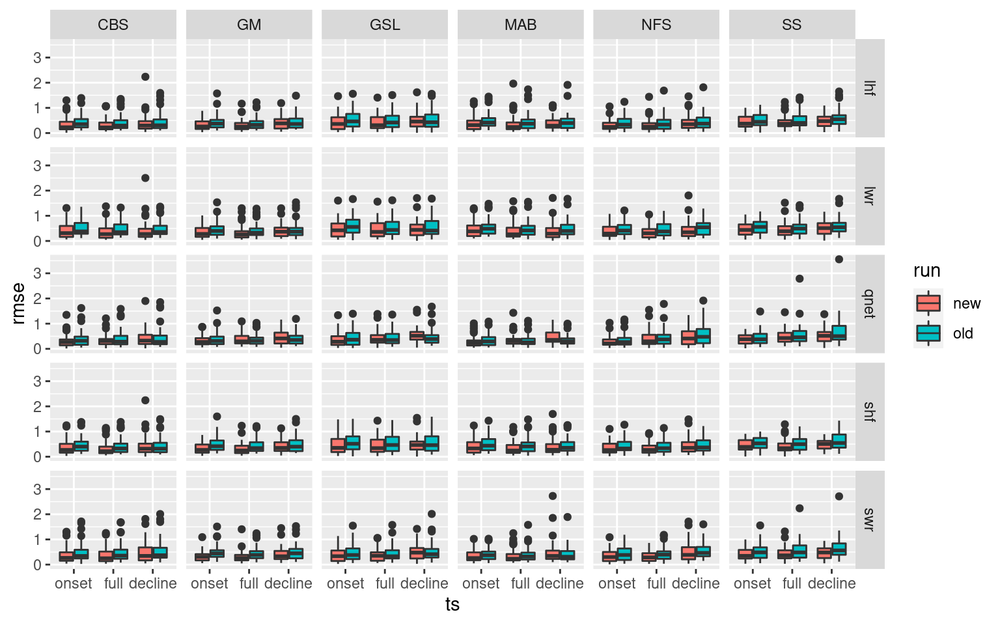
# scale_y_continuous(limits = c(0, 2))The new an improved method that correctly integrates Qx into SSTa creates much lower RMSE values for almost every variable and region. A smashing success.
RMSE summary
Here we will go about summarising the RMSE results. We will also create some boxplots to help with the process.
# The base RMSE results
ALL_RMSE <- ALL_cor %>%
filter(rmse > 0 ) %>%
dplyr::select(region:ts, Parameter2, n_Obs, rmse) %>%
mutate(Parameter2 = as.character(Parameter2),
Parameter2 = case_when(Parameter2 == "lwr_budget" ~ "Qlw",
Parameter2 == "swr_budget" ~ "Qsw",
Parameter2 == "lhf_budget" ~ "Qlh",
Parameter2 == "shf_budget" ~ "Qsh",
Parameter2 == "qnet_budget" ~ "Qnet",
TRUE ~ Parameter2),
Parameter2 = factor(Parameter2, levels = c("Qnet", "Qlh", "Qsh", "Qlw", "Qsw")),
region = toupper(region))
# Summaries by region
ALL_RMSE_region <- ALL_RMSE %>%
dplyr::select(-season, -event_no, -n_Obs) %>%
group_by(region, ts, Parameter2) %>%
summarise(rmse_min = min(rmse),
rmse_mean = mean(rmse),
rmse_max = max(rmse), .groups = "drop")
# Boxplot of region summaries
ALL_RMSE %>%
dplyr::select(-season, -event_no, -n_Obs) %>%
ggplot(aes(x = Parameter2, y = rmse)) +
geom_boxplot(aes(fill = ts)) +
facet_wrap(~region) #+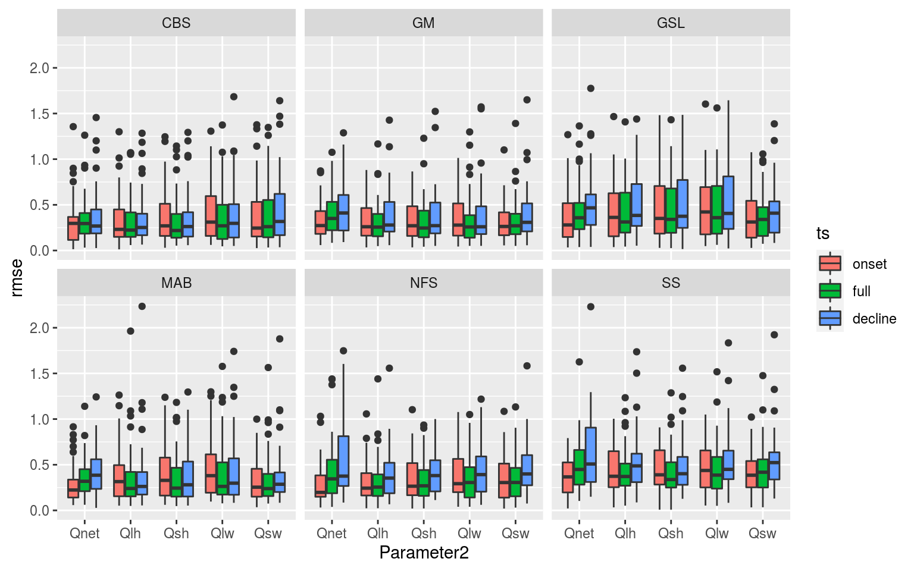
# theme(axis.text.x = element_text(angle = 45))
# Summaries by season
ALL_RMSE_season <- ALL_RMSE %>%
dplyr::select(-region, -event_no, -n_Obs) %>%
group_by(season, ts, Parameter2) %>%
summarise(rmse_min = min(rmse),
rmse_mean = mean(rmse),
rmse_max = max(rmse), .groups = "drop")
# Boxplot of season results
ALL_RMSE %>%
dplyr::select(-region, -event_no, -n_Obs) %>%
ggplot(aes(x = Parameter2, y = rmse)) +
geom_boxplot(aes(fill = ts)) +
facet_wrap(~season)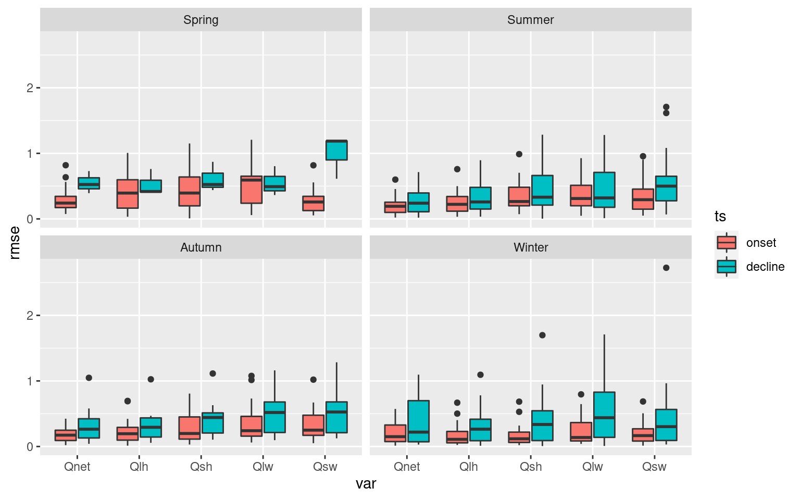
These boxplots help to tell a high level story about the importance of the Qx terms with SSTa, but I want a slightly more fine-grain level of results. To do this I am going to count which of the Qx terms has the lowest RMSE per MHW. These will then be grouped by region and season to provide an understanding for how this may vary.
# Need a column showing total count of events and a column showing count of Qnet apart from the other variables.
RMSE_region_count <- ALL_RMSE %>%
dplyr::select(region:ts, n_Obs) %>%
unique() %>%
group_by(region, ts) %>%
summarise(count = n())
RMSE_season_count <- ALL_RMSE %>%
dplyr::select(region:ts, n_Obs) %>%
unique() %>%
group_by(season, ts) %>%
summarise(count = n())
# Get the top RMSE results (i.e. the lowest RMSE scores)
ALL_RMSE_Qnet <- ALL_RMSE %>%
group_by(region, season, event_no, ts) %>%
filter(rmse == min(rmse))
# Get the top results other than Qnet
ALL_RMSE_other <- ALL_RMSE %>%
filter(Parameter2 != "Qnet") %>% # Remove Qnet
group_by(region, season, event_no, ts) %>%
filter(rmse == min(rmse))
# The top count by region
ALL_RMSE_Qnet_region <- ALL_RMSE_Qnet %>%
group_by(region, ts, Parameter2) %>%
summarise(count = n(), .groups = "drop") %>%
filter(Parameter2 == "Qnet")
ALL_RMSE_region <- ALL_RMSE_other %>%
group_by(region, ts, Parameter2) %>%
summarise(count = n(), .groups = "drop") %>%
rbind(ALL_RMSE_Qnet_region) %>%
pivot_wider(names_from = Parameter2, values_from = count) %>%
mutate(Qlw = replace_na(Qlw, 0)) %>%
left_join(RMSE_region_count, by = c("region", "ts")) %>%
dplyr::select(region, ts, count, Qnet, Qlh:Qsw) %>%
mutate(Qnet = paste0(Qnet, " (",round((Qnet/count)*100),"%)"),
Qlh = paste0(Qlh, " (",round((Qlh/count)*100),"%)"),
Qsh = paste0(Qsh, " (",round((Qsh/count)*100),"%)"),
Qlw = paste0(Qlw, " (",round((Qlw/count)*100),"%)"),
Qsw = paste0(Qsw, " (",round((Qsw/count)*100),"%)"))
knitr::kable(ALL_RMSE_region)| region | ts | count | Qnet | Qlh | Qsh | Qlw | Qsw |
|---|---|---|---|---|---|---|---|
| CBS | onset | 43 | 19 (44%) | 11 (26%) | 10 (23%) | 6 (14%) | 16 (37%) |
| CBS | full | 53 | 12 (23%) | 15 (28%) | 15 (28%) | 9 (17%) | 15 (28%) |
| CBS | decline | 43 | 13 (30%) | 14 (33%) | 14 (33%) | 6 (14%) | 9 (21%) |
| GM | onset | 41 | 12 (29%) | 9 (22%) | 6 (15%) | 11 (27%) | 15 (37%) |
| GM | full | 47 | 8 (17%) | 9 (19%) | 8 (17%) | 14 (30%) | 16 (34%) |
| GM | decline | 38 | 7 (18%) | 7 (18%) | 8 (21%) | 9 (24%) | 14 (37%) |
| GSL | onset | 44 | 16 (36%) | 13 (30%) | 5 (11%) | 4 (9%) | 22 (50%) |
| GSL | full | 49 | 15 (31%) | 14 (29%) | 6 (12%) | 7 (14%) | 22 (45%) |
| GSL | decline | 41 | 12 (29%) | 9 (22%) | 7 (17%) | 6 (15%) | 19 (46%) |
| MAB | onset | 50 | 31 (62%) | 13 (26%) | 8 (16%) | 0 (0%) | 29 (58%) |
| MAB | full | 57 | 12 (21%) | 18 (32%) | 10 (18%) | 3 (5%) | 26 (46%) |
| MAB | decline | 50 | 8 (16%) | 13 (26%) | 13 (26%) | 3 (6%) | 21 (42%) |
| NFS | onset | 37 | 15 (41%) | 14 (38%) | 6 (16%) | 6 (16%) | 11 (30%) |
| NFS | full | 44 | 7 (16%) | 14 (32%) | 7 (16%) | 11 (25%) | 12 (27%) |
| NFS | decline | 37 | 5 (14%) | 10 (27%) | 4 (11%) | 11 (30%) | 12 (32%) |
| SS | onset | 36 | 13 (36%) | 11 (31%) | 2 (6%) | 7 (19%) | 16 (44%) |
| SS | full | 41 | 8 (20%) | 10 (24%) | 6 (15%) | 11 (27%) | 14 (34%) |
| SS | decline | 34 | 6 (18%) | 10 (29%) | 7 (21%) | 8 (24%) | 9 (26%) |
# The top count by season
ALL_RMSE_Qnet_season <- ALL_RMSE_Qnet %>%
group_by(season, ts, Parameter2) %>%
summarise(count = n(), .groups = "drop") %>%
filter(Parameter2 == "Qnet")
ALL_RMSE_season <- ALL_RMSE_other %>%
group_by(season, ts, Parameter2) %>%
summarise(count = n(), .groups = "drop") %>%
rbind(ALL_RMSE_Qnet_season) %>%
pivot_wider(names_from = Parameter2, values_from = count) %>%
# mutate(Qlw = replace_na(Qlw, 0)) %>%
left_join(RMSE_season_count, by = c("season", "ts")) %>%
dplyr::select(season, ts, count, Qnet, Qlh:Qsw) %>%
mutate(Qnet = paste0(Qnet, " (",round((Qnet/count)*100),"%)"),
Qlh = paste0(Qlh, " (",round((Qlh/count)*100),"%)"),
Qsh = paste0(Qsh, " (",round((Qsh/count)*100),"%)"),
Qlw = paste0(Qlw, " (",round((Qlw/count)*100),"%)"),
Qsw = paste0(Qsw, " (",round((Qsw/count)*100),"%)"))
knitr::kable(ALL_RMSE_season)| season | ts | count | Qnet | Qlh | Qsh | Qlw | Qsw |
|---|---|---|---|---|---|---|---|
| Spring | onset | 53 | 20 (38%) | 9 (17%) | 6 (11%) | 5 (9%) | 33 (62%) |
| Spring | full | 58 | 20 (34%) | 15 (26%) | 8 (14%) | 7 (12%) | 28 (48%) |
| Spring | decline | 42 | 16 (38%) | 10 (24%) | 7 (17%) | 5 (12%) | 20 (48%) |
| Summer | onset | 88 | 38 (43%) | 28 (32%) | 2 (2%) | 9 (10%) | 49 (56%) |
| Summer | full | 105 | 20 (19%) | 26 (25%) | 20 (19%) | 13 (12%) | 46 (44%) |
| Summer | decline | 88 | 17 (19%) | 21 (24%) | 19 (22%) | 8 (9%) | 40 (45%) |
| Autumn | onset | 62 | 34 (55%) | 28 (45%) | 15 (24%) | 7 (11%) | 12 (19%) |
| Autumn | full | 70 | 17 (24%) | 25 (36%) | 12 (17%) | 15 (21%) | 19 (27%) |
| Autumn | decline | 62 | 11 (18%) | 21 (34%) | 11 (18%) | 14 (23%) | 16 (26%) |
| Winter | onset | 48 | 14 (29%) | 6 (12%) | 14 (29%) | 13 (27%) | 15 (31%) |
| Winter | full | 58 | 5 (9%) | 14 (24%) | 12 (21%) | 20 (34%) | 12 (21%) |
| Winter | decline | 51 | 7 (14%) | 11 (22%) | 16 (31%) | 16 (31%) | 8 (16%) |
I’m pretty happy with how these results are displayed. But I think it would be better to show the regions and seasons in separate tables just to keep them more manageable. In the last chunk in this sub-section we will grab some specific summary stats that are used in the publication.
# Short event best fits
ALL_RMSE_short <- ALL_RMSE %>%
filter(n_Obs <= 14, Parameter2 != "Qnet") %>%
group_by(region, season, event_no, ts) %>%
filter(rmse == min(rmse))
# Short event index
ALL_RMSE_long <- ALL_RMSE %>%
filter(n_Obs > 14, Parameter2 != "Qnet") %>%
group_by(region, season, event_no, ts) %>%
filter(rmse == min(rmse))
# The top Qx for events of 14 days or less by region
ALL_RMSE_short_region <- ALL_RMSE_short %>%
group_by(region, ts) %>%
mutate(count = n()) %>%
group_by(region, ts, count, Parameter2) %>%
summarise(count_Q = n(), .groups = "drop") %>%
pivot_wider(names_from = Parameter2, values_from = count_Q) %>%
mutate(Qlw = replace_na(Qlw, 0)) %>%
dplyr::select(region, ts, count, Qlh:Qsw) %>%
mutate(Qlh = paste0(Qlh, " (",round((Qlh/count)*100),"%)"),
Qsh = paste0(Qsh, " (",round((Qsh/count)*100),"%)"),
Qlw = paste0(Qlw, " (",round((Qlw/count)*100),"%)"),
Qsw = paste0(Qsw, " (",round((Qsw/count)*100),"%)"))
knitr::kable(ALL_RMSE_short_region)| region | ts | count | Qlh | Qsh | Qlw | Qsw |
|---|---|---|---|---|---|---|
| CBS | onset | 37 | 9 (24%) | 9 (24%) | 4 (11%) | 15 (41%) |
| CBS | full | 36 | 7 (19%) | 11 (31%) | 7 (19%) | 11 (31%) |
| CBS | decline | 36 | 10 (28%) | 13 (36%) | 6 (17%) | 7 (19%) |
| GM | onset | 33 | 6 (18%) | 5 (15%) | 7 (21%) | 15 (45%) |
| GM | full | 26 | 3 (12%) | 5 (19%) | 8 (31%) | 10 (38%) |
| GM | decline | 31 | 5 (16%) | 7 (23%) | 8 (26%) | 11 (35%) |
| GSL | onset | 41 | 12 (29%) | 4 (10%) | 4 (10%) | 21 (51%) |
| GSL | full | 36 | 8 (22%) | 6 (17%) | 5 (14%) | 17 (47%) |
| GSL | decline | 37 | 7 (19%) | 7 (19%) | 5 (14%) | 18 (49%) |
| MAB | onset | 43 | 11 (26%) | 6 (14%) | 0 (0%) | 26 (60%) |
| MAB | full | 41 | 12 (29%) | 6 (15%) | 2 (5%) | 21 (51%) |
| MAB | decline | 44 | 12 (27%) | 12 (27%) | 2 (5%) | 18 (41%) |
| NFS | onset | 31 | 11 (35%) | 5 (16%) | 4 (13%) | 11 (35%) |
| NFS | full | 29 | 10 (34%) | 4 (14%) | 7 (24%) | 8 (28%) |
| NFS | decline | 30 | 9 (30%) | 3 (10%) | 9 (30%) | 9 (30%) |
| SS | onset | 26 | 7 (27%) | 1 (4%) | 6 (23%) | 12 (46%) |
| SS | full | 24 | 3 (12%) | 3 (12%) | 8 (33%) | 10 (42%) |
| SS | decline | 23 | 4 (17%) | 6 (26%) | 7 (30%) | 6 (26%) |
# The top Qx for events of more than 14 days by region
ALL_RMSE_long_region <- ALL_RMSE_long %>%
group_by(region, ts) %>%
mutate(count = n()) %>%
group_by(region, ts, count, Parameter2) %>%
summarise(count_Q = n(), .groups = "drop") %>%
pivot_wider(names_from = Parameter2, values_from = count_Q) %>%
mutate(Qsh = replace_na(Qsh, 0),
Qsw = replace_na(Qsw, 0),
Qlw = replace_na(Qlw, 0)) %>%
dplyr::select(region, ts, count, Qlh:Qsw) %>%
mutate(Qlh = paste0(Qlh, " (",round((Qlh/count)*100),"%)"),
Qsh = paste0(Qsh, " (",round((Qsh/count)*100),"%)"),
Qlw = paste0(Qlw, " (",round((Qlw/count)*100),"%)"),
Qsw = paste0(Qsw, " (",round((Qsw/count)*100),"%)"))
knitr::kable(ALL_RMSE_long_region)| region | ts | count | Qlh | Qsh | Qlw | Qsw |
|---|---|---|---|---|---|---|
| CBS | onset | 6 | 2 (33%) | 1 (17%) | 2 (33%) | 1 (17%) |
| CBS | full | 18 | 8 (44%) | 4 (22%) | 2 (11%) | 4 (22%) |
| CBS | decline | 7 | 4 (57%) | 1 (14%) | 0 (0%) | 2 (29%) |
| GM | onset | 8 | 3 (38%) | 1 (12%) | 4 (50%) | 0 (0%) |
| GM | full | 21 | 6 (29%) | 3 (14%) | 6 (29%) | 6 (29%) |
| GM | decline | 7 | 2 (29%) | 1 (14%) | 1 (14%) | 3 (43%) |
| GSL | onset | 3 | 1 (33%) | 1 (33%) | 0 (0%) | 1 (33%) |
| GSL | full | 13 | 6 (46%) | 0 (0%) | 2 (15%) | 5 (38%) |
| GSL | decline | 4 | 2 (50%) | 0 (0%) | 1 (25%) | 1 (25%) |
| MAB | onset | 7 | 2 (29%) | 2 (29%) | 0 (0%) | 3 (43%) |
| MAB | full | 16 | 6 (38%) | 4 (25%) | 1 (6%) | 5 (31%) |
| MAB | decline | 6 | 1 (17%) | 1 (17%) | 1 (17%) | 3 (50%) |
| NFS | onset | 6 | 3 (50%) | 1 (17%) | 2 (33%) | 0 (0%) |
| NFS | full | 15 | 4 (27%) | 3 (20%) | 4 (27%) | 4 (27%) |
| NFS | decline | 7 | 1 (14%) | 1 (14%) | 2 (29%) | 3 (43%) |
| SS | onset | 10 | 4 (40%) | 1 (10%) | 1 (10%) | 4 (40%) |
| SS | full | 17 | 7 (41%) | 3 (18%) | 3 (18%) | 4 (24%) |
| SS | decline | 11 | 6 (55%) | 1 (9%) | 1 (9%) | 3 (27%) |
# The top Qx for events of 14 days or less by season
ALL_RMSE_short_season <- ALL_RMSE_short %>%
group_by(season, ts) %>%
mutate(count = n()) %>%
group_by(season, ts, count, Parameter2) %>%
summarise(count_Q = n(), .groups = "drop") %>%
pivot_wider(names_from = Parameter2, values_from = count_Q) %>%
mutate(Qlw = replace_na(Qlw, 0)) %>%
dplyr::select(season, ts, count, Qlh:Qsw) %>%
mutate(Qlh = paste0(Qlh, " (",round((Qlh/count)*100),"%)"),
Qsh = paste0(Qsh, " (",round((Qsh/count)*100),"%)"),
Qlw = paste0(Qlw, " (",round((Qlw/count)*100),"%)"),
Qsw = paste0(Qsw, " (",round((Qsw/count)*100),"%)"))
knitr::kable(ALL_RMSE_short_season)| season | ts | count | Qlh | Qsh | Qlw | Qsw |
|---|---|---|---|---|---|---|
| Spring | onset | 47 | 8 (17%) | 5 (11%) | 5 (11%) | 29 (62%) |
| Spring | full | 42 | 11 (26%) | 4 (10%) | 7 (17%) | 20 (48%) |
| Spring | decline | 37 | 10 (27%) | 6 (16%) | 5 (14%) | 16 (43%) |
| Summer | onset | 78 | 23 (29%) | 2 (3%) | 6 (8%) | 47 (60%) |
| Summer | full | 70 | 14 (20%) | 15 (21%) | 8 (11%) | 33 (47%) |
| Summer | decline | 75 | 18 (24%) | 18 (24%) | 6 (8%) | 33 (44%) |
| Autumn | onset | 49 | 22 (45%) | 12 (24%) | 5 (10%) | 10 (20%) |
| Autumn | full | 42 | 11 (26%) | 9 (21%) | 9 (21%) | 13 (31%) |
| Autumn | decline | 47 | 13 (28%) | 11 (23%) | 11 (23%) | 12 (26%) |
| Winter | onset | 37 | 3 (8%) | 11 (30%) | 9 (24%) | 14 (38%) |
| Winter | full | 38 | 7 (18%) | 7 (18%) | 13 (34%) | 11 (29%) |
| Winter | decline | 42 | 6 (14%) | 13 (31%) | 15 (36%) | 8 (19%) |
# The top Qx for events of more than 14 days by season
ALL_RMSE_long_season <- ALL_RMSE_long %>%
group_by(season, ts) %>%
mutate(count = n()) %>%
group_by(season, ts, count, Parameter2) %>%
summarise(count_Q = n(), .groups = "drop") %>%
pivot_wider(names_from = Parameter2, values_from = count_Q) %>%
mutate(Qsh = replace_na(Qsh, 0),
Qsw = replace_na(Qsw, 0),
Qlw = replace_na(Qlw, 0),
Qlh = replace_na(Qlh, 0)) %>%
dplyr::select(season, ts, count, Qlh:Qsw) %>%
mutate(Qlh = paste0(Qlh, " (",round((Qlh/count)*100),"%)"),
Qsh = paste0(Qsh, " (",round((Qsh/count)*100),"%)"),
# Qlw = paste0(Qlw, " (",round((Qlw/count)*100),"%)"), # Qlw is never the most important for any of the seasons
Qsw = paste0(Qsw, " (",round((Qsw/count)*100),"%)"))
knitr::kable(ALL_RMSE_long_season)| season | ts | count | Qlh | Qsh | Qsw |
|---|---|---|---|---|---|
| Spring | onset | 6 | 1 (17%) | 1 (17%) | 4 (67%) |
| Spring | full | 16 | 4 (25%) | 4 (25%) | 8 (50%) |
| Spring | decline | 5 | 0 (0%) | 1 (20%) | 4 (80%) |
| Summer | onset | 10 | 5 (50%) | 0 (0%) | 2 (20%) |
| Summer | full | 35 | 12 (34%) | 5 (14%) | 13 (37%) |
| Summer | decline | 13 | 3 (23%) | 1 (8%) | 7 (54%) |
| Autumn | onset | 13 | 6 (46%) | 3 (23%) | 2 (15%) |
| Autumn | full | 29 | 14 (48%) | 3 (10%) | 6 (21%) |
| Autumn | decline | 15 | 8 (53%) | 0 (0%) | 4 (27%) |
| Winter | onset | 11 | 3 (27%) | 3 (27%) | 1 (9%) |
| Winter | full | 20 | 7 (35%) | 5 (25%) | 1 (5%) |
| Winter | decline | 9 | 5 (56%) | 3 (33%) | 0 (0%) |
We also want to see how RMSE scores change the shorter the time series portion of the MHW is.
# Faceted scatter plot showing how RMSE changes based on ts length
ggplot(ALL_RMSE, aes(x = n_Obs, y = rmse)) +
geom_point(aes(colour = ts)) +
geom_smooth(aes(colour = ts), method = "lm") +
facet_wrap(~region)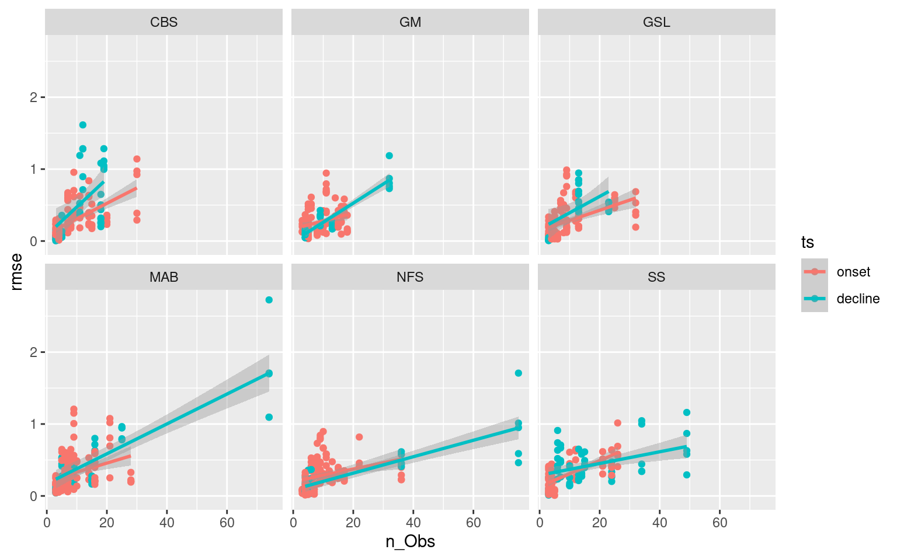
# Faceted scatter plot showing how RMSE changes based on ts length
ggplot(ALL_RMSE, aes(x = n_Obs, y = rmse)) +
geom_point(aes(colour = ts)) +
geom_smooth(aes(colour = ts), method = "lm") +
facet_wrap(~season)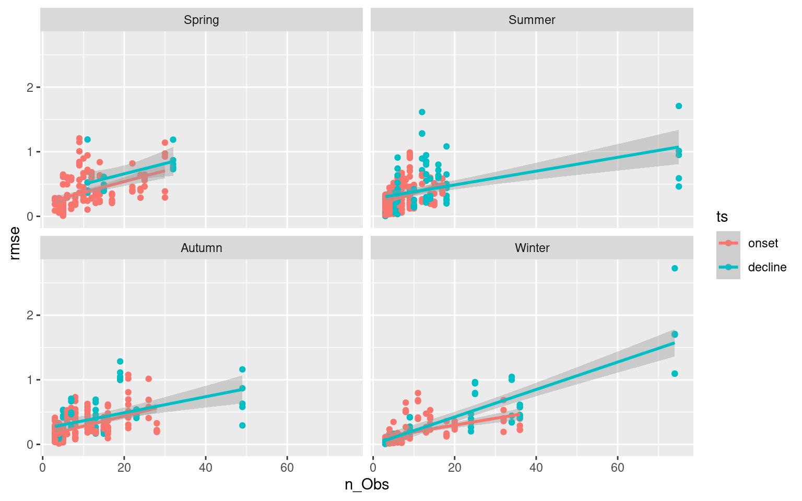
Correlations: summary, regions, seasons
With the correlations calculated for the onset, decline, and full extent of each MHW, we want to know if any signals emerge from the regions and/or seasons of occurrence of these events. Is the relationship between SSS and MHW onset stronger in the winter? Stronger in certain region? Having manually looked through the Shiny app it does look like there are some patterns. Below is the code used to determine the stats referred to in the paper.
# Overall correlation results
cor_summary_all <- ALL_cor %>%
filter(Parameter1 == "sst",
Parameter2 != "sst") %>%
group_by(ts, Parameter2) %>%
summarise(q10_r = quantile(r, 0.1),
mean_r = mean(r, na.rm = T),
q90_r = quantile(r, 0.9),
mean_rmse = mean(rmse, na.rm = T))
# Overall positive only results
cor_positive_all <- ALL_cor %>%
filter(Parameter1 == "sst",
Parameter2 != "sst",
r > 0) %>%
group_by(ts, Parameter2) %>%
summarise(q10_r = quantile(r, 0.1),
mean_r = mean(r, na.rm = T),
q90_r = quantile(r, 0.9),
mean_rmse = mean(rmse, na.rm = T))
# Overall negative only results
cor_negative_all <- ALL_cor %>%
filter(Parameter1 == "sst",
Parameter2 != "sst",
r < 0) %>%
group_by(ts, Parameter2) %>%
summarise(q10_r = quantile(r, 0.1),
mean_r = mean(r, na.rm = T),
q90_r = quantile(r, 0.9),
mean_rmse = mean(rmse, na.rm = T))Relationships
With patterns pulled out by region and season, we want to see if there are any relationships between MHWs that show strong correlations at onset/decline with a particular QX term and strong correlations at onset/decline with an air/sea variable. We will look for this within regions and seasons as well. For example, do MHWs that correlate well with an increase in SSS also correlate well with a decrease in long-wave radiation during the decline of the event? I’m not sure how best to go about this in a clean manner.
Another thing to consider would be if fast onset slow decline (and vice versa) events have different characteristics to slower evolving events. The same question could be posed to long vs short events and those with high intensities vs low. In order to begin this investigation we must join the MHW results to the correlation results. We will visualise these patterns with heatmaps.
ALL_cor_wide <- readRDS("data/ALL_cor.Rda") %>%
ungroup() %>%
filter(Parameter1 == "sst") %>%
dplyr::select(region:ts, Parameter2, r, n_Obs) %>%
pivot_wider(values_from = r, names_from = Parameter2)
# Combine MHW metrics and correlation results
events_cor_prep <- OISST_MHW_event %>%
dplyr::select(region, season, event_no, duration, intensity_mean, intensity_max,
intensity_cumulative, rate_onset, rate_decline) %>%
left_join(ALL_cor_wide, by = c("region", "season", "event_no")) %>%
# ungroup() %>%
dplyr::select(region:n_Obs, sst, bottomT, sss, mld_cum, mld_1_cum, t2m, tcc_cum, p_e_cum, mslp_cum,
lwr_mld_cum, swr_mld_cum, lhf_mld_cum, shf_mld_cum, qnet_mld_cum)
# Heatmap showing average correlations by MHW duration
events_cor_prep %>%
mutate(duration = plyr::round_any(duration, 10)) %>%
group_by(ts, duration) %>%
mutate(count = n()) %>%
summarise_if(is.numeric, mean) %>%
pivot_longer(cols = sst:qnet_mld_cum) %>%
filter(name != "sst",
ts != "full",
duration <= 50) %>% # Only 1 event is longer than this
ggplot(aes(x = duration, y = name)) +
geom_tile(aes(fill = value)) +
geom_text(aes(label = count)) +
facet_wrap(~ts) +
scale_fill_gradient2(low = "blue", high = "red") +
coord_cartesian(expand = F) +
labs(y = NULL, x = "Duration (10 day steps)", fill = "r (mean)") +
theme(legend.position = "bottom")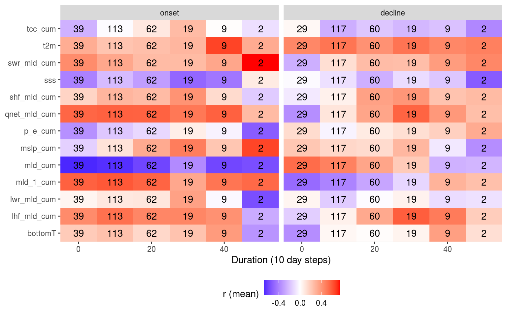
# Heatmap showing average correlations by MHW max intensity
events_cor_prep %>%
mutate(intensity_max = plyr::round_any(intensity_max, 0.5)) %>%
group_by(ts, intensity_max) %>%
mutate(count = n()) %>%
summarise_if(is.numeric, mean) %>%
pivot_longer(cols = sst:qnet_mld_cum) %>%
filter(name != "sst",
ts != "full") %>%
ggplot(aes(x = intensity_max, y = name)) +
geom_tile(aes(fill = value)) +
geom_text(aes(label = count)) +
facet_wrap(~ts) +
scale_fill_gradient2(low = "blue", high = "red") +
coord_cartesian(expand = F) +
labs(y = NULL, x = "Max Intensity (°C; 0.5° steps)", fill = "r (mean)") +
theme(legend.position = "bottom")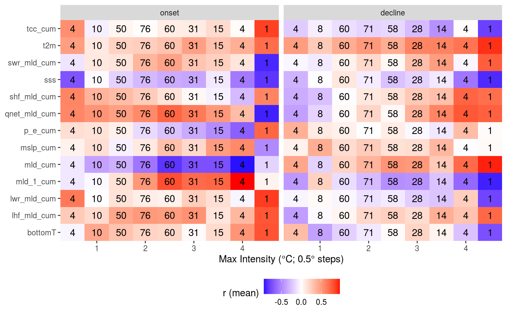
# Heatmap showing average correlations by MHW rate onset
events_cor_prep %>%
mutate(rate_onset = round(rate_onset, 1)) %>%
group_by(ts, rate_onset) %>%
mutate(count = n()) %>%
summarise_if(is.numeric, mean) %>%
pivot_longer(cols = sst:qnet_mld_cum) %>%
filter(name != "sst",
ts != "full",
rate_onset <= 0.75) %>% # Only two is faster than this
ggplot(aes(x = rate_onset, y = name)) +
geom_tile(aes(fill = value)) +
geom_text(aes(label = count)) +
facet_wrap(~ts) +
scale_fill_gradient2(low = "blue", high = "red") +
coord_cartesian(expand = F) +
labs(y = NULL, x = "Rate of onset (°C; 0.1° steps)", fill = "r (mean)") +
theme(legend.position = "bottom")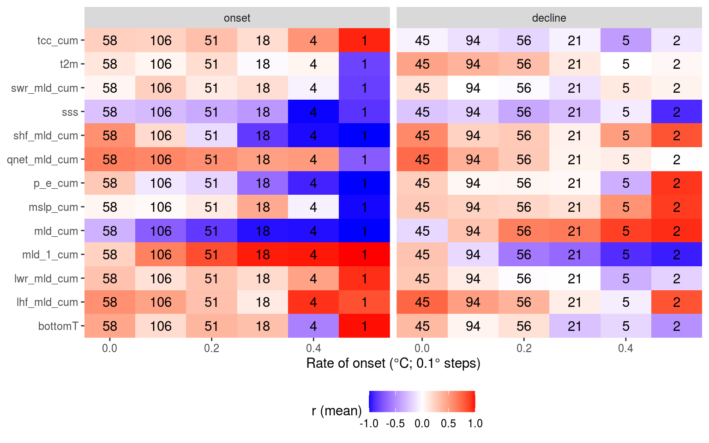
# Heatmap showing average correlations by MHW rate decline
events_cor_prep %>%
mutate(rate_decline = round(rate_decline, 1)) %>%
filter(rate_decline <= 0.6) %>% # nip off a couple of outliers
group_by(ts, rate_decline) %>%
mutate(count = n()) %>%
summarise_if(is.numeric, mean) %>%
pivot_longer(cols = sst:qnet_mld_cum) %>%
filter(name != "sst",
ts != "full") %>%
ggplot(aes(x = rate_decline, y = name)) +
geom_tile(aes(fill = value)) +
geom_text(aes(label = count)) +
facet_wrap(~ts) +
scale_fill_gradient2(low = "blue", high = "red") +
coord_cartesian(expand = F) +
labs(y = NULL, x = "Rate of decline (°C; 0.1° steps)", fill = "r (mean)") +
theme(legend.position = "bottom")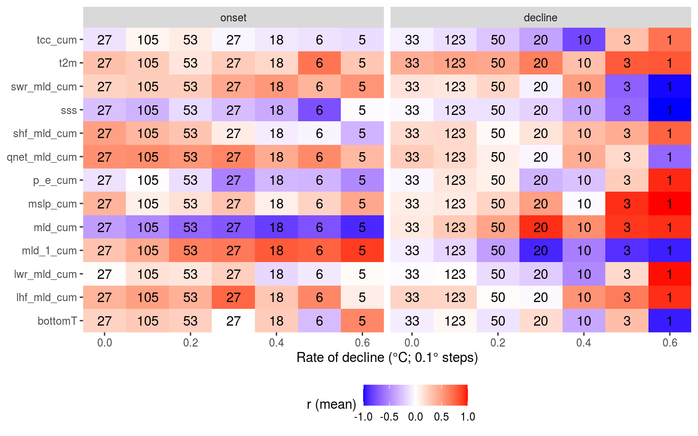
Linearity of events
Another observation I made while going through the results in the app was how the onset and decline of events tend to have a better RMSE when the SSTa trend is more linear. My hypothesis is that this is because there is less advective pressure on the dispersion of the heat anomaly, therefore more of the heatflux is responsible for the temperature anomaly. THis is a pretty straight forward statement, but I think it is useful in that one may be able to take linearity of SSTa as a proxy for the proportion of heat flux that is responsible for it. So in the chunk below I use simple linear models to create an R2 value for each onset and decline portion of an event. Then I find how close to 1.0 that R2 value is (meaning more linear SSTa) and I see how RMSE changes as R2 improves. I hypothesised that more linear SSTa onset will provide better (lower) RMSE values. The same is likely true for decline but I’m not certain.
# R2 for RMSE vs R2
ALL_cor_R2 <- readRDS("data/ALL_cor.Rda") %>%
ungroup() %>%
filter(Parameter1 == "sst", rmse > 0) %>%
nest_by(region, season, ts) %>%
summarise(broom::glance(lm(rmse ~ sst_R2, data = data)))
# Scatterplots
readRDS("data/ALL_cor.Rda") %>%
ungroup() %>%
filter(Parameter1 == "sst", rmse > 0) %>%
ggplot(aes(x = sst_R2, y = rmse)) +
geom_point() +
geom_smooth(method = "lm") +
facet_grid(region ~ Parameter2)
# Boxplots
readRDS("data/ALL_cor.Rda") %>%
ungroup() %>%
filter(Parameter1 == "sst", rmse > 0) %>%
mutate(sst_R2_cut = cut(sst_R2, breaks = c(0, 0.25, 0.5, 0.75,1.0))) %>%
na.omit() %>%
ggplot(aes(x = sst_R2_cut, y = rmse)) +
geom_boxplot() +
facet_grid(region ~ Parameter2)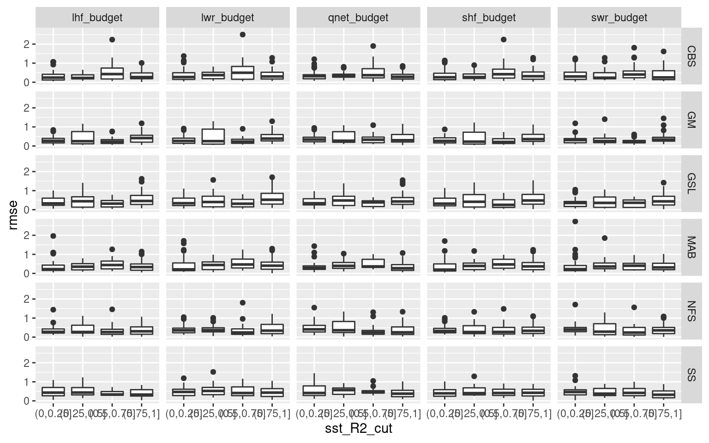
Nope. If there is any relationship it is incredibly noisey. I’ll not be pursuing this further for this project, but I’m not entirely dissuaded from pursuing this avenue of research in the future with a deeper learning approach.
Choice events
There are a lot of results to wade through and though it is clear there are important signals in the results, it is proving difficult to distill them. One thought is that we don’t need to look at all of the events, just the longest/most intense events with strong r values. This is first done by cutting out all Cat. I events. We then find strong correlations with long events. There should just be a few.
Once this has been done we group events by their strongest Qx relationship. Then find their strongest relationship with the next level of variables (e.g. MLD, MSLP, and so on). Ideally one may find the top four flavours.
# Filter out smol events
events_cor_cat <- events_cor_prep %>%
left_join(OISST_MHW_cats[,c("region", "event_no", "category")], by = c("region", "event_no")) %>%
filter(category != "I Moderate", duration >= 21)
# Events with high Qlw correlations at onset
events_cor_cat %>%
filter(ts == "onset", lwr_mld_cum >= 0.7)# A tibble: 5 x 26
# Groups: region [4]
region season event_no duration intensity_mean intensity_max intensity_cumul…
<chr> <fct> <int> <dbl> <dbl> <dbl> <dbl>
1 gsl Winter 21 69 1.52 2.47 105.
2 mab Autumn 39 28 2.39 3.30 67.0
3 mab Winter 40 32 2.03 2.86 65.1
4 nfs Summer 34 89 2.25 3.37 200.
5 ss Winter 39 66 1.93 2.71 128.
# … with 19 more variables: rate_onset <dbl>, rate_decline <dbl>, ts <fct>,
# n_Obs <int>, sst <dbl>, bottomT <dbl>, sss <dbl>, mld_cum <dbl>,
# mld_1_cum <dbl>, t2m <dbl>, tcc_cum <dbl>, p_e_cum <dbl>, mslp_cum <dbl>,
# lwr_mld_cum <dbl>, swr_mld_cum <dbl>, lhf_mld_cum <dbl>, shf_mld_cum <dbl>,
# qnet_mld_cum <dbl>, category <chr># Melt the data frame and find the q term with the highest correlation
# Those are then used to separate events into groups
events_q_onset <- events_cor_cat %>%
filter(ts == "onset") %>%
dplyr::select(region:event_no, ts, lwr_mld_cum:shf_mld_cum) %>%
pivot_longer(cols = lwr_mld_cum:shf_mld_cum, names_to = "var", values_to = "val") %>%
group_by(region, season, event_no) %>%
filter(abs(val) == max(abs(val)))
# With this guide one may then parse out the q groups
events_lhf_p_onset <- events_q_onset %>%
filter(val >= 0, var == "lhf_mld_cum") %>%
left_join(events_cor_cat) %>%
ungroup() %>%
# unite(region, season, event_no, sep = "_")
mutate(event_no = as.factor(event_no)) %>%
dplyr::select(region:ts, bottomT:qnet_mld_cum, -mld_1_cum) %>%
pivot_longer(bottomT:qnet_mld_cum) %>%
ggplot(aes(x = event_no, y = name)) +
geom_tile(aes(fill = value)) +
# facet_wrap(~name, scales = "free") +
scale_fill_gradient2(low = "blue", high = "red") +
coord_cartesian(expand = F) +
labs(y = NULL, fill = "r (mean)") +
theme(legend.position = "bottom")
events_lhf_p_onset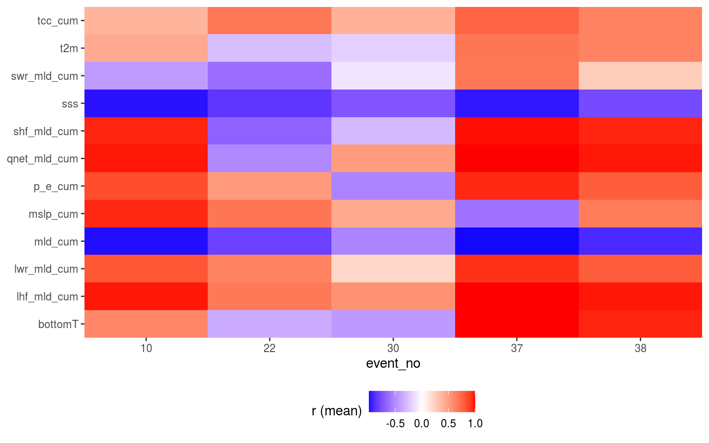
Table
In the following table a more concise summary of the results is presented.
| variable | abbreviation | onset | full | decline | season | region | overall | story |
|---|---|---|---|---|---|---|---|---|
| Air temperature | t2m | Even throughout | Slight positive | Strong positive | Autumn always strong positive for decline. Spring decline has large range. | Stronger positive for GSL and MAB. | Much clearer relationship for decline than onset. | TRUE |
| Total precipitation | tp | Normal with slight positive | Normal distribution | Even throughout | Autumn and Winter slightly more positive with Spring decline usually negative. | Nothing clear. SS and NFS decline most often r ~= 0. | Meh. | FALSE |
| Total evaporation | e | Even throughout | Normal distribution | Strong positive | Spring is the only season that isn’t mostly positive for decline. | SS is the only region not mostly positive for decline. | Important for the decline of events, except often in Spring. | TRUE |
| Precipitation minus evaporation | p_e | Normal with minor positive | Normal with minor positive | Normal with minor positive | Autumn then Winter tend more positive. | MAB decline more positive than others. GM GSL and MAB onset tend more positive. | This value is all over the board. It likely only coincides with MHWs due to something else. | FALSE |
| Prec – evap (cumulative) | p_e_cum | Strong negative and positive | Normal | Flat with positive tail | Spring then Summer strong negative onset. Autumn strong positive onset and decline. | GSL tends negative for decline while others tend positive. Very large ranges overall. | There is an important signal in the differences between Spring-Summer and Autumn. | TRUE |
| Air Northerly | v10 | Three hump | Normal distribution | Three hump | Large spread for all seasons with Autumn tending towards positive for onset and decline. | Not much difference. NFS tends a bit more towards positive onset and decline than others. | There are some signals in there, but they are not clear. | FALSE |
| Air Easterly | u10 | Slight positive | Normal distribution | Slight negative | Least amount of range in Autumn onset. | GM tends to have the least range and be the most negative for onset and decline. | Slight positive onset and slight negative decline imply this vaguely shows a thermal gradient. | FALSE |
| Wind speed | wind_spd | Normal but flat | Normal | Negative | Autumn onset tends positive while everything else tends negative. Summer decline more negative. | GM and MAB tend more negative for decline. | A smol signal for the GM and MAB showing decline negative with wind speed. | FALSE |
| Total cloud cover | tcc | Normal but positive | Normal but positive | Normal but positive | Spring onset tends most positive. | GM and NFS full tend more positive. MAB decline tends more positive. | Meh. | FALSE |
| Total cloud cover (cumulative) | tcc_cum | Strong positive with negative tail | Normal | Negative and positive | Autumn onset tends much more positive. Spring decline tends more negative. | Large ranges in onset. GSL tends much more negative for decline. | May be important for GSL events due to SWR importance there. | FALSE |
| Mean sea level pressure | msl | Strong negative with positive tail | Slight negative to normal | Even with positive tail | Autumn is much more negative for onset and decline. Spring and Summer onset tend positive. | GM and NFS more positive for decline. | Decrease in MSLP is often important for the onset of events | TRUE |
| Mean sea level pressure (cumulative) | msl_cum | Strong negative and positive | Normal but flat | Strong positive with small negative tail | Full range in onset and decline for all seasons except positive Spring onset. Autumn onset tends negative. | Full range for all. GM decline tends positive. CBS onset tends negative, NFS and SS onset tend positive. | Stronger signals than for MSLP non-cumulative. | TRUE |
| Sea surface height | ssh | Even throughout | Slight negative | Positive tail | Autumn onset and decline tend negative. | GM decline positive. | The strong positive signal for decline implies a height anomaly (i.e. an eddy) leaving the area. | TRUE |
| Current Northerly | v | Normal but flat | Normal distribution | Positive with small negative tail | Not much difference. Winter onset tends more negative. | GM onset and decline tend more positive. | Meh. | FALSE |
| Current Easterly | u | Normal with positive tail | Normal distribution | Slight three hump | Autumn decline tends positive while Summer tends negative. | NFS onset tends most positive. | Possibly something there for onset of events in NFS. | FALSE |
| Current speed | cur_spd | Flat but slight negative | Normal but negative | Flat but negative | Autumn onset tends to be positive while everything else tends negative. | GSL decline tends much more negative while MAB decline tends positive. | The positive decline for MAB implies the importance of advection for events. | FALSE |
| Sea surface salinity | sss | Strong negative with positive tail | Negative | Strong negative with positive tail | Summer then Autumn tend more negative. Largest range on Winter. | GSL much more negative for onset+full+decline. CBS onset strong negative. GM decline strong negative. | Strong negative mixed in with noise. Large differences between regions. | TRUE |
| Mixed layer depth | mld | Strong negative with positive tail | Negative | Strong negative with minor positive tail | Strong negative decline for all but Summer. Summer onset negative with large Spring and Winter range. | Strong negative for all but CBA and SS with large range. All negative onset but large ranges. | The decline of a MHW in Summer or the onset in Winter + Spring doesn’t seem as tied to MLD. | TRUE |
| Bottom temperature | bottomT | Strong positive with minor negative tail | Normal but flat | Strong positive with small negative tail | Large ranges with strong positive Autumn onset. | Strong positive onset for MAB + GM. CBS decline tends negative. | MHWs in Autumn generally have high bottom temps at onset | TRUE |
| Latent heat flux | mslhf_mld | Strong positive | Positive | Strong positive | Very strong positive onset+full+decline for Autumn. Large range in onset+decline in Spring. | Strong positive onset for MAB. | This variable is almost always important for onset and decline, especially in Autumn. | TRUE |
| Sensible heat flux | msshf_mld | Strong positive with negative tail | Flat | Strong positive with minor negative tail | Strong positive onset for Autumn + Winter and negative for Spring + Summer. | Some difference in tendency but similar ranges for all regions. | Very large differences in negative or positive correlations based on seasons. | TRUE |
| Longwave radiation | msnlwrf_mld | Strong positive with minor negative tail | Slight positive | Flat with positive tail | Positive onset tendency with Autumn much stronger. Spring + Summer decline tend negative. | Strong positive onset for MAB + GM. | Autumn may be significantly different from Spring. | TRUE |
| Shortwave radiation | msnswrf_mld | Negative with strong positive tail | Slight negative | Positive and negative | Strong negative onset for Autumn. Large range for everything else. | Strong negative onset for GM but largest spread for MAB. | A decrease in SWR in Autumn leads to MHWs, implying cloud cover or some other LHF mechanism. | TRUE |
| Net heat flux | qnet_mld | Very strong positive | Positive | Strong positive with minor negative tail | Autumn has strongest positive onset+full+decline. Spring decline has large range with negative tendency. | MAB strong positive onset + decline. All others tend positive with larger range in decline for GM. | All regions and seasons tend strong positive but with some notable outliers. | TRUE |
With a table organised by each variable, it makes sense to also create a table organised by season, and another by region.
NWA 2012
From Chen et al. 2016 (JGR) Such an extreme event in the MAB was attributed to the anomalous atmospheric forcing, which was linked to the northward shift in the jet stream position [Chen et al., 2014a, 2015]. The anomalously warm atmospheric conditions in the winter of 2011–2012 increased the ocean heat content (increased the ocean heat content anomaly) and facilitated the extreme warm ocean temperature in spring 2012 [Chen et al., 2014a, 2015]. On the other hand, the ocean advection played a secondary role, which partially damped the heat content anomaly created by the air-sea heat flux [Chen et al., 2015]. In both cases, initial temperature and ocean advection are not sufficient to describe the seasonal mean temperature. Additional cooling (warming) in addition to ocean advection is needed to further describe the winter (spring) temperature. In comparison, using the sum of the initial temperature and air-sea flux yields a much better description of seasonal mean temperatures (Figures 5c and 5f) While the overall role of ocean advection is smaller than that of air-sea flux in determining the winter and spring temperatures, the year-to-year changes in the relative importance is worth investigating. Normally, given anomalous initial temperature, air will act to damp the temperature anomaly, as in winter 2007 or 2011, or even 2005 to some extent. However, in winter 2012, the air continued to increase the temperature anomaly. Out of the 12 years 2003–2014, the air-sea flux normally dominated the temperature anomaly in the MAB during winter. In only 3 years was the winter time temperature anomaly primarily controlled by ocean advection. For spring, ocean advection has more control on the temperature anomalies than air-sea flux does, although the difference is smaller (Table 2). In both seasons, the relative importance of air-sea flux and ocean advection does not seem to be related to either the initial or seasonal mean thermal condition of the shelf water (fourth and fifth columns of Tables 1 and 2). The correlation coefficients increase from 0.66 in the first half of February to 0.91 in the second half of March. This suggests that estimation of spring temperature anomaly in the MAB based on the thermal condition 2 months before spring is statistically possible. This suggests that more northerly jet stream positions result in larger heatflux from the atmosphere into the ocean in the MAB. This is likely due to warmer and more humid air overlying the continental shelf, which reduces the heat loss from the ocean during the cooling seasons [Chenet al., 2014a]. In spring and summer, the air-sea flux may be less correlated with the air temperature due to the shallowness of the surface mixed layer, and thus may be disconnected from large-scale atmospheric circulation, i.e., jet stream variability.
References
Chen, K., Kwon, Y.-O., and Gawarkiewicz, G. (2016). Interannual variability of winter-spring temperature in the middle atlantic bight: Relative contributions of atmospheric and oceanic processes. Journal of Geophysical Research: Oceans 121, 4209–4227.
sessionInfo()R version 4.0.2 (2020-06-22)
Platform: x86_64-pc-linux-gnu (64-bit)
Running under: Ubuntu 16.04.6 LTS
Matrix products: default
BLAS: /usr/lib/openblas-base/libblas.so.3
LAPACK: /usr/lib/libopenblasp-r0.2.18.so
locale:
[1] LC_CTYPE=en_CA.UTF-8 LC_NUMERIC=C
[3] LC_TIME=en_CA.UTF-8 LC_COLLATE=en_CA.UTF-8
[5] LC_MONETARY=en_CA.UTF-8 LC_MESSAGES=en_CA.UTF-8
[7] LC_PAPER=en_CA.UTF-8 LC_NAME=C
[9] LC_ADDRESS=C LC_TELEPHONE=C
[11] LC_MEASUREMENT=en_CA.UTF-8 LC_IDENTIFICATION=C
attached base packages:
[1] parallel stats graphics grDevices utils datasets methods
[8] base
other attached packages:
[1] doParallel_1.0.15 iterators_1.0.12 foreach_1.5.0
[4] Metrics_0.1.4 yasomi_0.3 proxy_0.4-24
[7] e1071_1.7-3 ggraph_2.0.3 correlation_0.3.0
[10] tidync_0.2.4 heatwaveR_0.4.4.9000 lubridate_1.7.9
[13] data.table_1.13.0 forcats_0.5.0 stringr_1.4.0
[16] dplyr_1.0.1 purrr_0.3.4 readr_1.3.1
[19] tidyr_1.1.1 tibble_3.0.3 ggplot2_3.3.2
[22] tidyverse_1.3.0
loaded via a namespace (and not attached):
[1] colorspace_1.4-1 ellipsis_0.3.1 class_7.3-17 rprojroot_1.3-2
[5] parameters_0.8.2 fs_1.5.0 rstudioapi_0.11 farver_2.0.3
[9] graphlayouts_0.7.0 ggrepel_0.8.2 fansi_0.4.1 xml2_1.3.2
[13] codetools_0.2-16 splines_4.0.2 ncdf4_1.17 knitr_1.29
[17] polyclip_1.10-0 jsonlite_1.7.0 workflowr_1.6.2 broom_0.7.0
[21] dbplyr_1.4.4 ggforce_0.3.2 effectsize_0.3.2 compiler_4.0.2
[25] httr_1.4.2 backports_1.1.8 assertthat_0.2.1 Matrix_1.2-18
[29] lazyeval_0.2.2 cli_2.0.2 later_1.1.0.1 tweenr_1.0.1
[33] htmltools_0.5.0 tools_4.0.2 igraph_1.2.5 gtable_0.3.0
[37] glue_1.4.1 Rcpp_1.0.5 cellranger_1.1.0 RNetCDF_2.3-1
[41] vctrs_0.3.2 nlme_3.1-147 insight_0.9.0 xfun_0.16
[45] rvest_0.3.6 lifecycle_0.2.0 ncmeta_0.2.5 MASS_7.3-51.6
[49] scales_1.1.1 tidygraph_1.2.0 hms_0.5.3 promises_1.1.1
[53] yaml_2.2.1 gridExtra_2.3 stringi_1.4.6 highr_0.8
[57] bayestestR_0.7.2 rlang_0.4.7 pkgconfig_2.0.3 evaluate_0.14
[61] lattice_0.20-41 htmlwidgets_1.5.1 labeling_0.3 tidyselect_1.1.0
[65] plyr_1.8.6 magrittr_1.5 R6_2.4.1 generics_0.0.2
[69] DBI_1.1.0 pillar_1.4.6 haven_2.3.1 whisker_0.4
[73] withr_2.2.0 mgcv_1.8-31 modelr_0.1.8 crayon_1.3.4
[77] utf8_1.1.4 plotly_4.9.2.1 rmarkdown_2.3 viridis_0.5.1
[81] grid_4.0.2 readxl_1.3.1 blob_1.2.1 git2r_0.27.1
[85] reprex_0.3.0 digest_0.6.25 httpuv_1.5.4 munsell_0.5.0
[89] viridisLite_0.3.0